CAPÍTULO IV
Inventario de Materiales para Modelismo
El éxito de una maqueta reside en la selección adecuada de su materia prima. A continuación, exploramos los componentes esenciales desde su origen vegetal hasta polímeros avanzados.
4.1 El Papel: La Fibra Base
Las fibras vegetales procesadas otorgan una versatilidad única para representar superficies planas y volúmenes ortogonales.
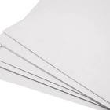
Ilustración
Superficie satinada de alta calidad. Ideal para acabados finales por su mínima porosidad y resistencia mecánica al corte.
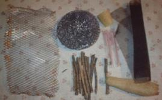
Batería
Compuesto por capas de celulosa que permiten el lijado de bordes. Es el preferido para simular concreto u hormigón visto.
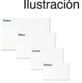
Cascarón
Presenta una textura granulada similar a una cáscara de huevo. Es rígido pero propenso a deslaminarse si el cúter no tiene filo.
4.2 Cartulina
Material intermedio entre papel y cartón. Su gramaje permite pliegues precisos para maquetas de estudio rápido.
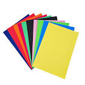
- Negra/Blanca: Contrastes y moldes.
- Fosforescente: Puntos de atención y flujos.
4.3 Cartón y Espuma
La Espuma Rígida (Foamboard) es el estándar en urbanismo por su ligereza y capacidad de extrusión volumétrica.
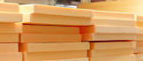
4.5 Materiales Moldeables y Plásticos
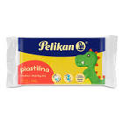
Plastilina
Impermeable y maleable. Perfecta para topografía orgánica y detalles que requieren corrección constante.
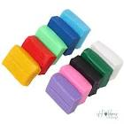
Arcilla (Barro)
Tierra pulverulenta rica en silicatos. Se utiliza para modelado de terrenos naturales a gran escala.
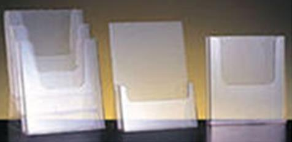
Metacrilato (PMMA)
Termoplástico de alta transparencia. Resiste impactos y ofrece una estética premium en acabados de lujo.
4.7 - 4.10 Vidrio, Acetato y Pastas
Para la simulación de cerramientos transparentes, el Acetato es la opción técnica preferida por su flexibilidad, mientras que el Vidrio Mineral aporta realismo a maquetas estáticas de gran formato.
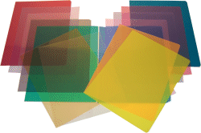
Delgado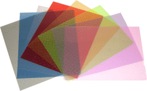
Estriado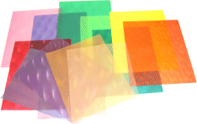
Relieve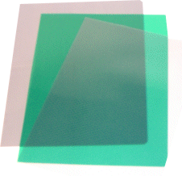
Holograma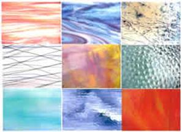
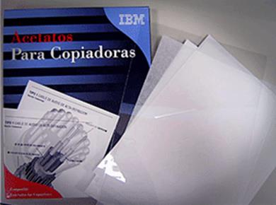
4.11 Metales y Mallas
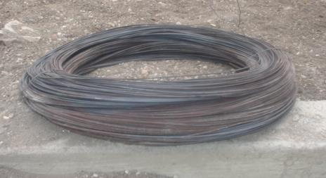
Alambre Quemado
Estructuras rígidas.
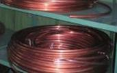
Cobre
Conductividad y detalle.

Aluminio
Ligeros y maleables.
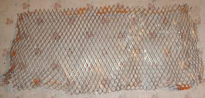
Malla de Filtro
Simulación de filtros.

Lámina Metálica: Utilizada para techumbres industriales y portones de seguridad.
Acabados Finales y Protección

Pinturas y Pigmentos
Acuarelas y témperas solubles al agua para texturizado de muros.
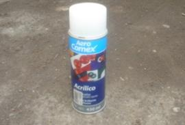
Protección en Spray
Esmaltes transparentes para sellar plastilina y dar brillo uniforme.
Consejo Técnico
La cola blanca no solo pega; aplicada con brocha sobre figuras de plastilina, crea una costra protectora de alto brillo.